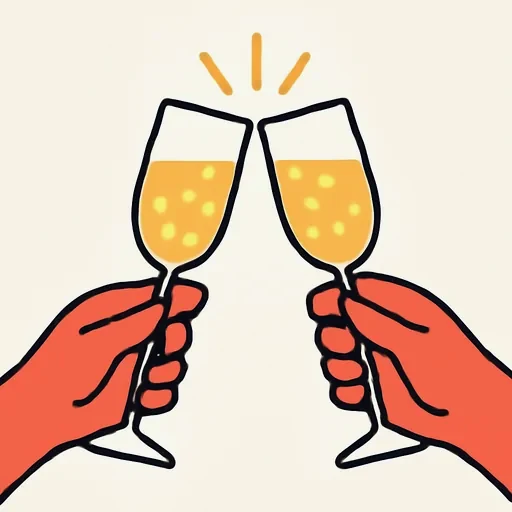
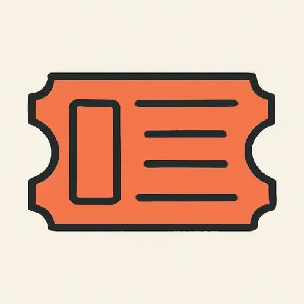
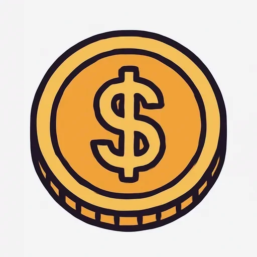
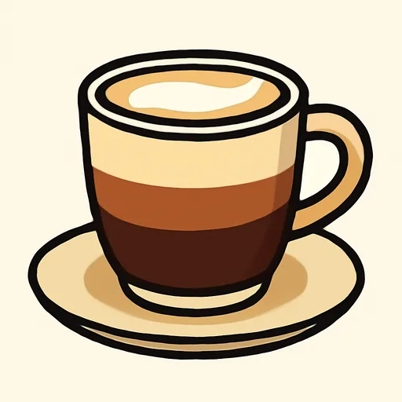
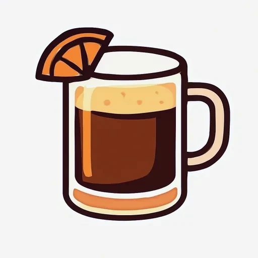
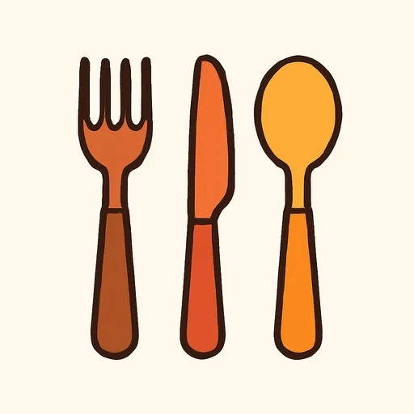
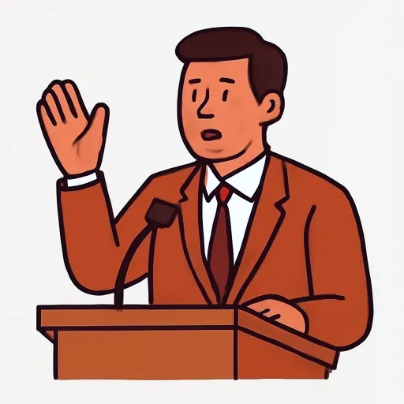

Черновик: урок написан, но преподаватель его ещё не вычитал.
Semana 12 · Día 7 — Sobremesa, propina y brindis; tarea final
Неделя 12 · День 7 — Застолье, чаевые и тосты; итоговое задание
Сегодня вы
- узнаете, почему испанский обед заканчивается через два часа после еды;
- поймёте, сколько оставлять на чай в Испании и в Латинской Америке — и почему это разные ответы;
- сдадите итоговое задание единицы: двуязычное меню из шести блюд.
1. Разминка (0–3 мин)
- Карточки: 10 слов из стопки «ещё раз» (la cuenta, lleva, se come con, está bueno, mucha hambre…).
2. Материал (3–15 мин)
La sobremesa
Terminar de comer no es terminar la comida. Lo que viene después tiene su propio nombre: la sobremesa — el tiempo que la gente se queda en la mesa hablando, con un café delante, cuando los platos ya están vacíos. Puede durar media hora; puede durar más que la comida.
Y por eso en España el camarero no trae la cuenta hasta que el cliente pide la cuenta. No es un olvido: la mesa es tuya mientras hablas. Si esperas y no dices nada, puedes esperar una hora. La cuenta se pide: La cuenta, por favor o, muy español, ¿Nos cobra, por favor?
Una comida de domingo en familia empieza a las dos y termina a las seis. De esas cuatro horas, dos son sobremesa.
¿Quién paga?
Tres situaciones y tres frases:
- Hoy invito yo. — Сегодня я угощаю. (invitar — это и «приглашать», и «платить за другого».)
- Pagamos a medias. — Платим пополам.
- Pagamos a escote. — Скидываемся, каждый за своё. Это очень испанское слово и очень испанская привычка: в компании друзей обычно именно так.
En España el precio de la carta ya incluye el IVA y el servicio: el número que ves en la carta es el número que pagas. No hay sorpresas al final.
La propina
Y aquí no hay una respuesta, hay varias, porque depende del país:
- En España la propina no es obligatoria y es pequeña. Se deja el cambio pequeño, se redondea la cuenta, o no se deja nada. Por un café en la barra, lo normal es no dejar nada. Nadie se ofende: el camarero tiene su sueldo y el servicio ya está en el precio.
- En México lo habitual es alrededor de un 10 %, y allí sí se espera.
- En Argentina, alrededor de un 10 % también. Y en el ticket puede aparecer el cubierto: un dinero aparte por el pan y los cubiertos, que no es propina.
- En Chile el ticket suele traer la propina sugerida, normalmente un 10 %, y tú dices sí o no.
La regla práctica para no equivocarse nunca: mira el ticket. Si dice servicio incluido o propina sugerida, ya tienes la respuesta. Y si no dice nada, puedes preguntar: ¿Está incluido el servicio?
El brindis
Se levantan los vasos y se dice ¡Salud! Una palabra. También ¡Chinchín!, que imita el sonido de los vasos, y, más largo y de broma, ¡Salud, dinero y amor!
Y aquí está la diferencia que hay que saber: el brindis español es corto. Una palabra, los vasos se tocan, se bebe, y la conversación sigue. El brindis ruso es un discurso: se cuenta una historia, se nombra a la persona, puede durar un minuto o tres. Si en una mesa española empiezas un brindis de un minuto, la mesa se queda callada y te mira. No es mala educación: nadie sabe que es un brindis, y todos creen que quieres decir algo importante.
Antes y después de comer
¡Que aproveche! 🌎 ¡Buen provecho! se dice al empezar, y en España lo dice hasta quien pasa al lado de tu mesa y no te conoce. Se contesta Gracias o Igualmente. Al final, al camarero: Todo muy bueno, gracias.
Y el café de la sobremesa: un café solo, un cortado (café con un poco de leche) o un carajillo (café con licor). El carajillo es de después de comer, nunca de desayuno.
Прочитайте текст вслух один раз целиком, не останавливаясь на незнакомых словах. Потом второй раз — со словарём ниже.
3. Слова (15–20 мин)
Новые слова (десять пар).
| Español | Русский | Español | Русский |
|---|---|---|---|
| la propina | чаевые |  el brindis |
тост |
| ¡Salud! | За здоровье! | ¡Chinchín! | Чин-чин! (звон бокалов) |
| brindar (por) | поднимать тост (за) | durar | длиться |
| invitar | угощать; приглашать | pagar a medias | платить пополам |
| a escote | скинувшись, каждый за своё |  el ticket |
чек |
| el servicio | обслуживание | el IVA | НДС |
| el cambio | сдача |  la moneda |
монета |
| redondear | округлять (сумму) | obligatorio / obligatoria | обязательный |
 el cortado |
кофе с капелькой молока |  el carajillo |
кофе с ликёром |
 el cubierto |
столовый прибор; сбор за прибор (Арг.) |  el discurso |
речь |
А эти десять вы уже видели — на этой неделе и на прошлой. Сегодня они просто вернулись в тексте: повторите их по карточкам, новых среди них нет.
la sobremesa · el menú del día · la cuenta · el camarero 🌎 el mesero · la bebida · incluido · la ración · el vaso · ¡Que aproveche! · la comida
🌎 Одно слово, разные страны:
| España | América | Русский |
|---|---|---|
| la cuenta | la cuenta · la nota | счёт |
| pagar a escote | pagar cada uno lo suyo | скинуться |
| ¡Que aproveche! | ¡Buen provecho! | Приятного аппетита! |
| la propina pequeña o nada | la propina del 10 % | чаевые |
4. Задание (20–28 мин)
А. Правда или неправда?
- En España el camarero trae la cuenta cuando ve que has terminado de comer.
- La sobremesa es el tiempo que se queda la gente en la mesa después de comer.
- En España el precio de la carta incluye el IVA y el servicio.
- En México y en Argentina lo habitual es dejar alrededor de un 10 %.
- El «cubierto» del ticket argentino es la propina.
- Un brindis español normal dura un minuto.
Б. Y en tu país… Пять фраз. Сравните по-испански: кто платит в компании друзей, сколько оставляют на чай, есть ли сдача «на чай», долго ли сидят за столом после еды и какой тост говорят. Используйте en Rusia… / en España…
En Rusia la propina es de un 10 % más o menos. En España es pequeña o no hay. En Rusia no hay sobremesa con café: después de comer la gente se levanta de la mesa. Un brindis ruso es un discurso, no una palabra…
В. ИТОГОВОЕ ЗАДАНИЕ ЕДИНИЦЫ 6: двуязычное меню из шести блюд.
Составьте меню на двух языках: три русских блюда и три испанских. На каждое блюдо — название на двух языках, цена и описание из трёх фраз по формуле четверга: es un / una… · lleva… · se come / se toma…
MENÚ BILINGÜE · 6 platos · precios de ejemplo (учебные цифры, а не настоящие цены)
BORSCH · БОРЩ — 6,50 € Es una sopa caliente de remolacha. Lleva remolacha, carne de vaca, col y cebolla. Se come con nata ácida y con pan negro.
PELMENI · ПЕЛЬМЕНИ — 8,00 € Son masa rellena de carne picada y cebolla. Son parecidos a los ravioli italianos. Se comen con mantequilla o con nata ácida.
GAZPACHO — 5,00 € Es una sopa fría de tomate. Lleva tomate, pepino, pan, aceite de oliva y vinagre. Se toma muy frío, en vaso o en plato.
(…и ещё три: одно русское и два испанских.)
Проверьте перед тем, как сдать: стоит ли un / una после es? Нет ли артикля после lleva? Согласовано ли se come / se comen с числом блюда? Все цены подписаны как учебные?
Это итоговое задание единицы — на него можно взять остаток дня. Прочитайте готовое меню вслух и запишите: это полторы минуты испанской речи о еде, которой у вас не было две недели назад.
5. Итог (28–30 мин)
Одной фразой по-русски: что в испанском застолье вам подошло бы, а что нет — короткий тост или длинный, сдача на чай или ничего?
Добавьте в колоду 5 слов — лучше те, которые вы использовали в задании Б.
Единица 6 закрыта. Вы заказываете еду, покупаете её на вес, просите вежливо, рассказываете про свою кухню и говорите, что вкусно. На следующей неделе — единица 7, De compras: одежда, цвета, размеры, примерочная и маленькие слова lo, la, los, las, которые заменяют уже названную вещь.
Ответы
А. 1. F (счёт не приносят, пока его не попросишь: La cuenta, por favor) · 2. V · 3. V (в Испании написанная цена — это то, что вы платите) · 4. V · 5. F (cubierto — это отдельная плата за хлеб и приборы, а не чаевые; чаевые оставляют сверху) · 6. F (испанский тост — одно слово: ¡Salud!; минутная речь — это русский тост).
Б. Образец. En Rusia, en un restaurante con amigos, normalmente paga cada uno lo suyo, pero a veces uno invita a todos. La propina es de un 10 % más o menos, y mucha gente deja el cambio pequeño. En España la propina es pequeña o no hay, porque el servicio está incluido. En Rusia no hay sobremesa con café: después de comer la gente se levanta de la mesa. Y un brindis ruso es un discurso con una historia, no una palabra.
В. Проверяется по трём вещам, а не по длине: формула описания (es una… · lleva… · se come…), артикль после es и его отсутствие после lleva и de, и согласование se come / se comen. Цены — учебные: в меню должно быть написано, что это precios de ejemplo.